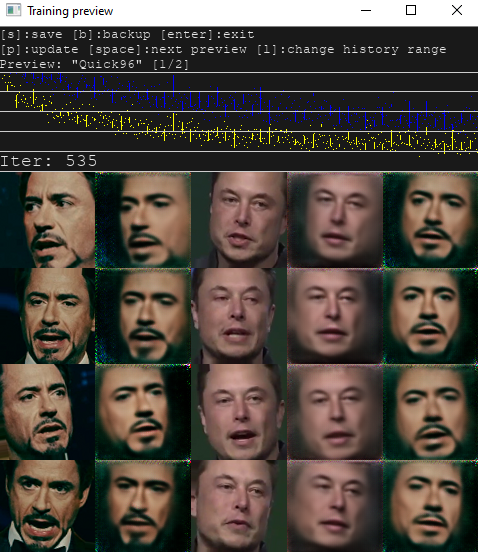
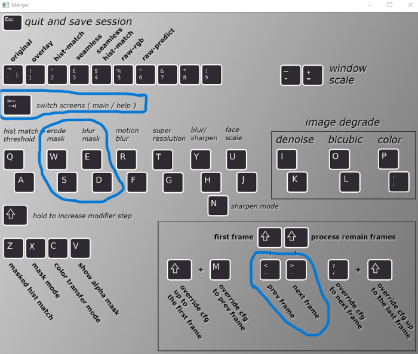

Video deepfakes (DeepFaceLab)
If you don't have a good graphics card (preferably Nvidia, as it's dedicated for this project), it's best not to proceed, as it could overload your computer!
A deepfake is a type of synthetic media where artificial intelligence is used to manipulate or replace a person's face and voice in video, making it appear as though they are saying or doing something they never actually did. To make one, you have to install DeepFaceLab from its GitHub repository or directly from here. The downloaded folder will include everything you need to create a deepfake, along with demo videos featuring Elon Musk and Robert Downey Jr, whose faces will swapped in this tutorial.
- Run the
2) extract images from video data_srcscript. A CMD console will open, where you will respond to all questions by pressing ENTER (inserting the default value). The frames from thedata_srcvideo will be extracted to thedata_srcfolder. This video contains the person whose face is to be cut out and merged into the other video. - Run the
3) extract images from video data_dst FULL FPSscript and again choose the default values by pressing ENTER. This script will extract all frames from thedata_dstvideo to thedata_dstfolder. - Run the
4) data_src faceset extractscript and enter the default values. It will extract the face from each frame stored in thedata_srcfolder todata_src / aligned. - To view the extracted faces, run
4.1) data_src view aligned result. There, you can delete any frames you don’t like, but it’s not necessary. - Run the
5) data_dst faceset extractscript (here, also enter the default values). This script will also extract faces, but from the frames stored in thedata_dstdirectory. - Begin training the model using the
6) train Quick96script. Enter the project's name, insert the default values, and wait. A preview window will appear (presspon your keyboard to update it). When the iteration count (Iter) reaches more than 150.000, close the window by pressing ENTER.  - Run the
7) merge Quick96script, confirm the default values, and wait. Once a window appears, seterode maskto 20 andblur maskto 100 (using the listed keys). The values set for the current frame can be viewed in the console. Press TAB to switch to the video preview. You will need to adjust the mentioned values accordingly along with the video (use>and<to navigate frames).  - Run the
8) merged to mp4script and set the default values. It will export the video to an.mp4file in theworkspacefolder. When everything is done and you no longer wish to make any changes, move the final file to another folder and run1) clear workspaceto delete all files (extracted frames, etc.).